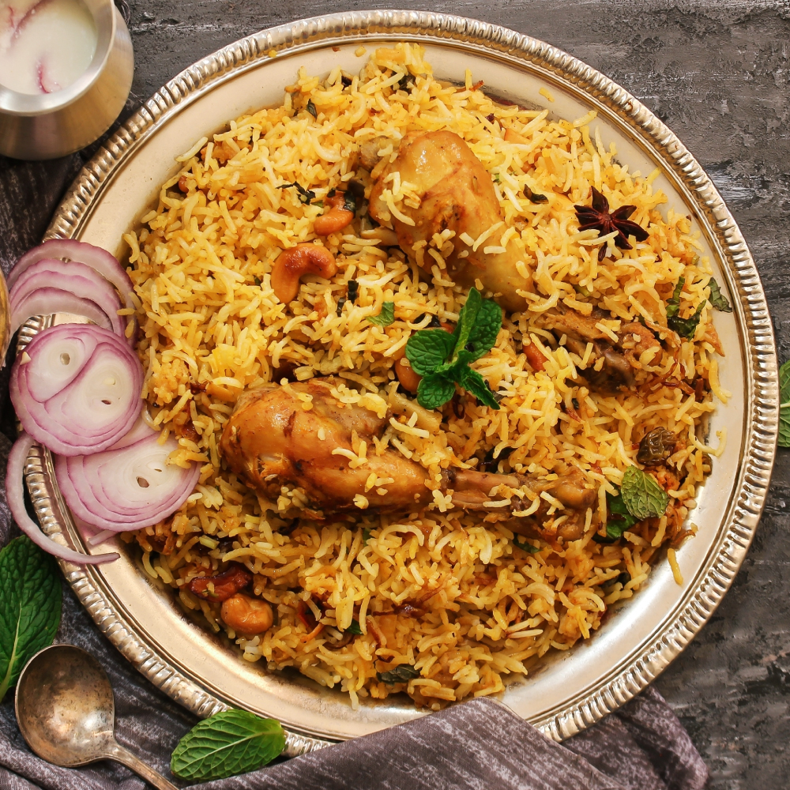
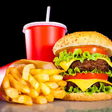
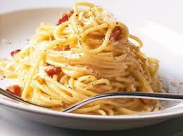
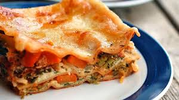
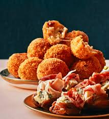
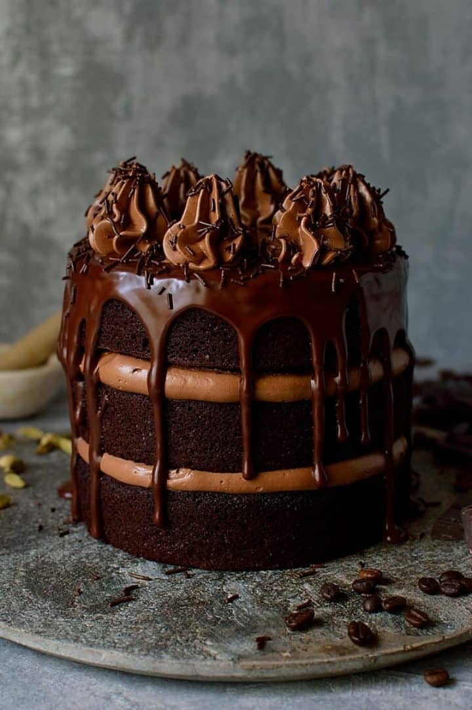

Explore the Flavors of Our Kitchen At our food corner, each dish is crafted with care and tradition. From sizzling street snacks to hearty home-style meals, we bring you a delicious journey of flavors. Our chefs begin with the freshest ingredients—hand-picked vegetables, farm-fresh meats, and authentic spices. Whether it's a slow-cooked biryani layered with fragrant basmati rice and tender marinated meat, or a crisp dosa prepared on a hot iron griddle and filled with spicy potato masala, each item is cooked to perfection. Some recipes are steamed gently to preserve nutrients, while others are grilled or sautéed to bring out rich, smoky flavors. Every dish tells a story of culture, cooking techniques, and love for food.

Biryani is one of the most popular rice dishes & traditionally it is cooked adapting the process of dum pukht, meaning “steam cooked over low fire”. The traditional process of Chicken Biryani starts by marinating meat in yogurt along with spices and herbs.

A hamburger (or simply a burger) consists of fillings—usually a patty of ground meat, typically beef—placed inside a sliced bun or bread roll. The patties are often served with cheese, lettuce, tomato, onion, pickles, bacon, relish or a "special sauce", often a variation of Thousand Island dressing, and are frequently placed on sesame seed buns.

Fried Noodles Recipe made with Sippy Noodles and loads of Healthy Vegetables. Veg Hakka Noodles Recipe is an interesting noodle variety like Biryani Noodles with less oil. I hope you have read my recent post Honey Chilli Potatoes, I paired this Hakka Noodles with Honey Chilli Potatoes.

This sourdough grilled cheese sandwich, with its golden, crispy, buttery exterior and an ooey-gooey centre, uses a four-cheese blend of sharp cheddar, mozzarella, gouda, and parmesan that when combined with the rustic depth of sourdough will absolutely take your classic grilled cheese.

Cheese Balls are crispy and delicious cheesy snack that is absolutely addictive! Golden fried crispy balls with gooey melting cheese in the center, this is the best and easy cheese ball recipe ever!

MOIST CHOCOLATE CAKE recipe on the internet with rich chocolate taste and ultra soft, moist crumb texture. If you've been looking for it, then look no further... THIS IS IT! It is the recipe here on this website. It is so easy to make without a mixer.